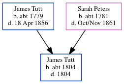

Maria Rolfe (née Tutt) c1825 - c1897
[ Home ] | [ Calendar ] | [ Surnames Index ] | [ Errors ] | [ Family History ]The child of James Tutt (a farm bailiff) and Sarah Peters (a nurse), Maria Tutt, the three times great-aunt of Nigel Horne, was born in Cheriton, Kent, England c. 18251,2,3, was baptised there at St Martin's Church on 6 Mar 1825 and married William Rolfe (an agricultural labourer with whom she had 10 children: John, Sarah, Henry, Elizabeth, James, Richard, Maria, William George, Edmund and Susan J, along with 2 surviving children) in Elham, Kent, England around Nov 18445.
During her life, she was living in Brookland, Kent, England on 6 Jun 18416; at Cheriton Street in Cheriton on 30 Mar 18511; at Horn Street in Cheriton on 7 Apr 18617 (when she was living with her), in 18712 (the same place as her mother had been living on 7 Apr 1861), on 2 Apr 18712 and on 3 Apr 18813; and at Sandgate Road, Hythe, Kent on 5 Apr 18918.
She died c. Jul 1897 in Elham4 and was buried in Cheriton on 4 Jul 1897.
Parents
- James was born c. 1779
- Sarah was born c. 1781
Children
- John was born in 1846
- Sarah was born in 1847
- Henry was born in 1849
- Elizabeth was born in 1852
- James was born on 13 Jan 1853
- Richard was born in 1856
- Edmund was born in 1863
- Susan J was born in 1867
Citations
- 1851 England, Wales & Scotland Census - Findmypast (was age 26 and the wife of the head of the household)
- 1871 England, Wales & Scotland Census - Findmypast (was age 46 and the wife of the head of the household)
- 1881 England, Wales & Scotland Census - Findmypast (was age 56 and the wife of the head of the household)
- England & Wales deaths 1837-2007 - Findmypast
- England & Wales Marriages 1837-2005 - Findmypast
- 1841 England, Wales & Scotland Census - Findmypast (was age 17)
- 1861 England, Wales & Scotland Census - Findmypast (was age 37 and the wife of the head of the household)
- 1891 England, Wales & Scotland Census - Findmypast (was age 66 and a visitor in the household)
Media
Kentish Gazette October 17, 1871

England Births & Baptisms 1538-1975 - R_885430625
England & Wales marriages 1837-2005 - BMD/M/1844/4/AZ/000663/031
Kent Baptisms - GBPRS/CANT/B/96413971
1841 England, Wales & Scotland Census - GBC-1841-0014073465
1861 England, Wales & Scotland Census - GBC/1861/0003628531
1851 England, Wales & Scotland Census - GBC/1851/0005970053
1871 England, Wales & Scotland Census - GBC-1871-0014389468
1881 England, Wales & Scotland Census - GBC/1881/0004958463
England & Wales deaths 1837-2007 - BMD/D/1897/3/AZ/000318/263
Family Tree
Map
Generated by ged2site. Last updated on Jul 3, 2024
Known Issues
Burial date (4 Jul 1897) has no citations
Listed in the residence for 5 Apr 1891, but spouse William Rolfe is not